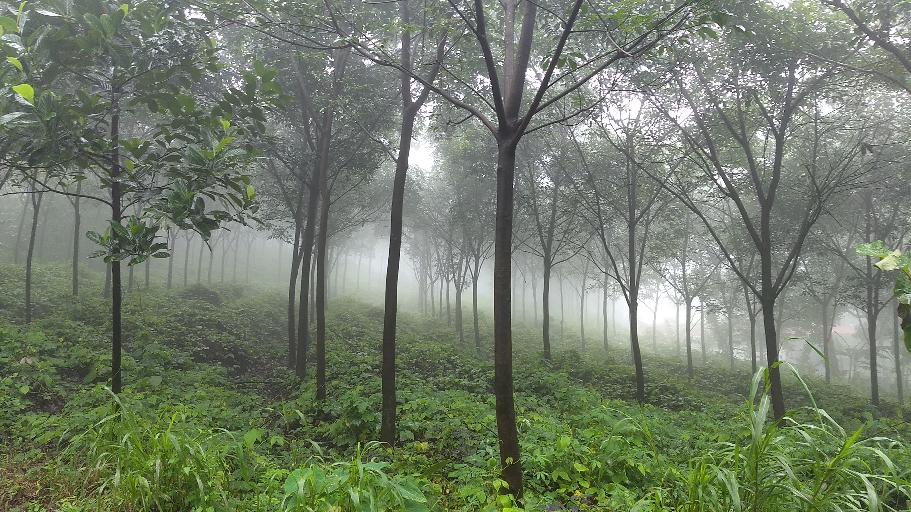
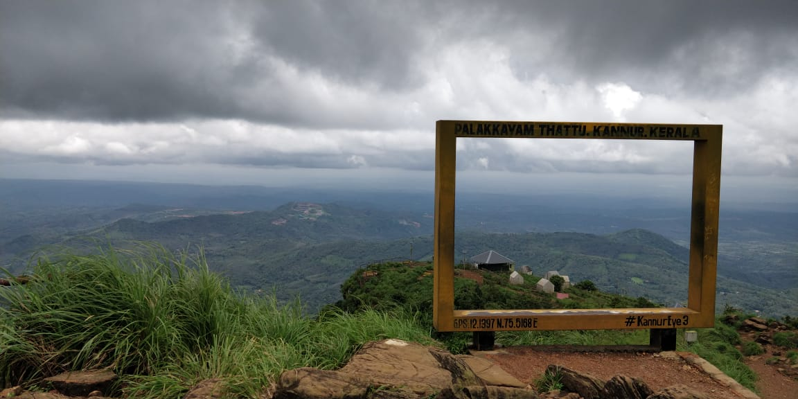
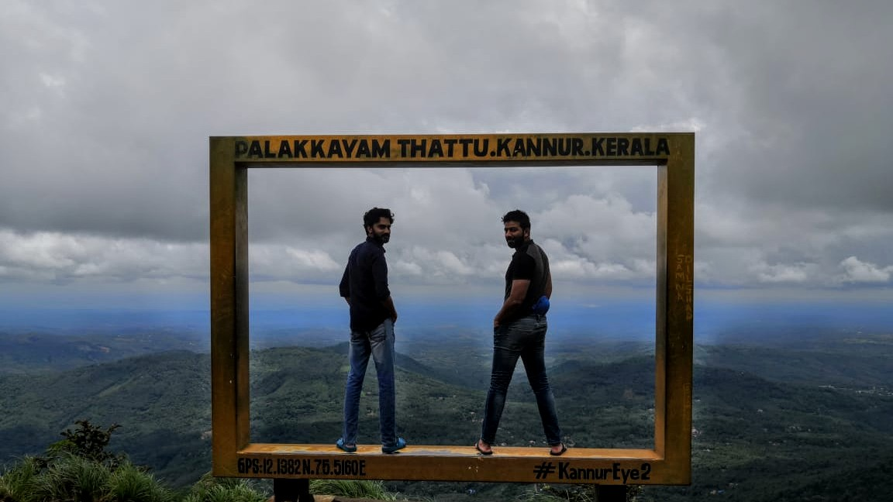
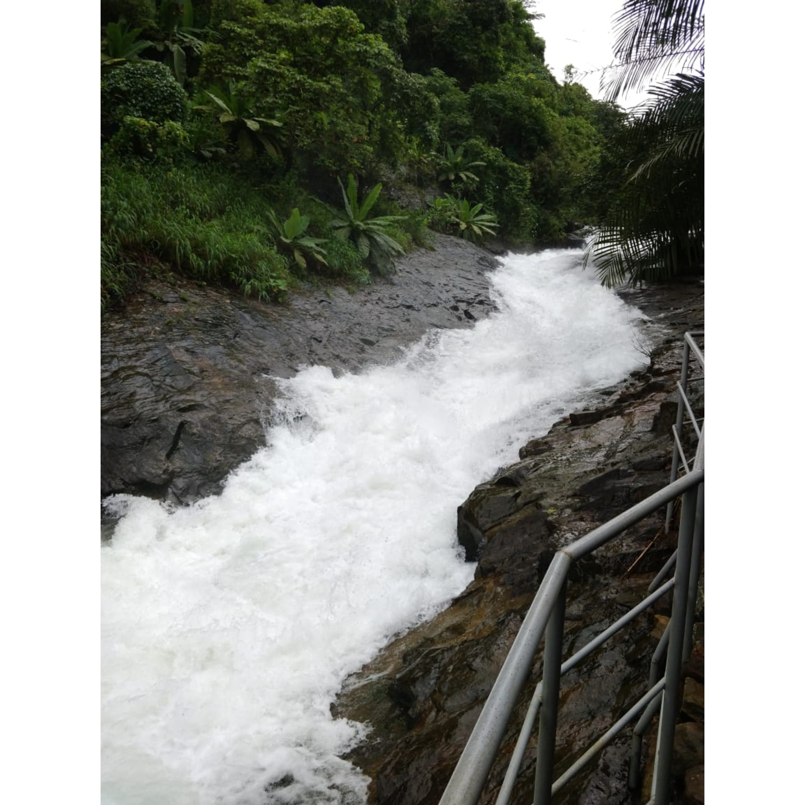
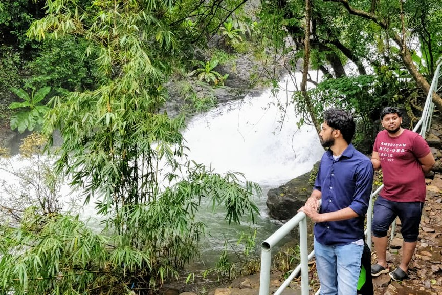
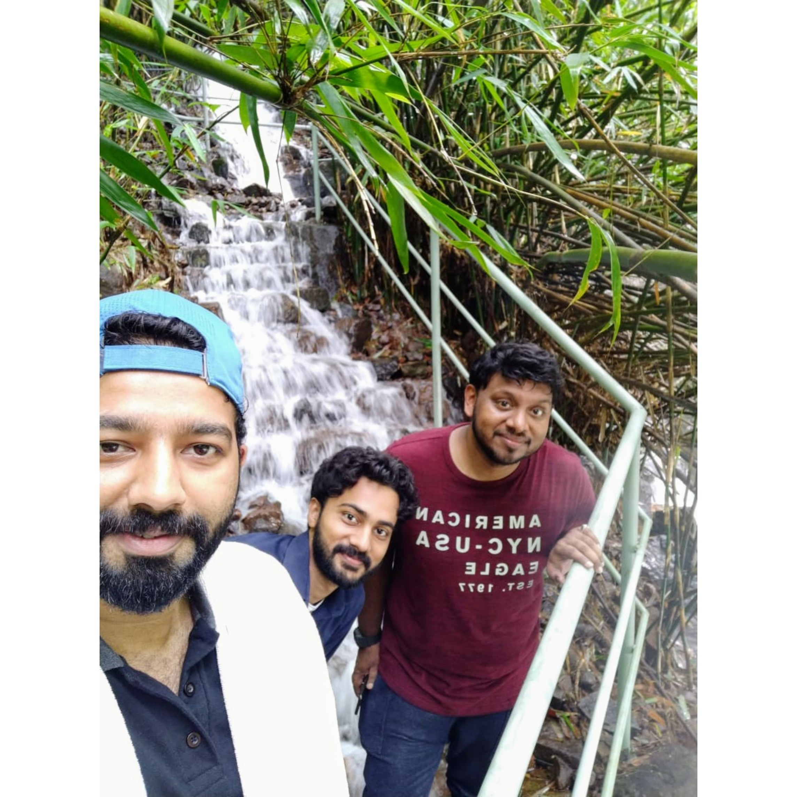
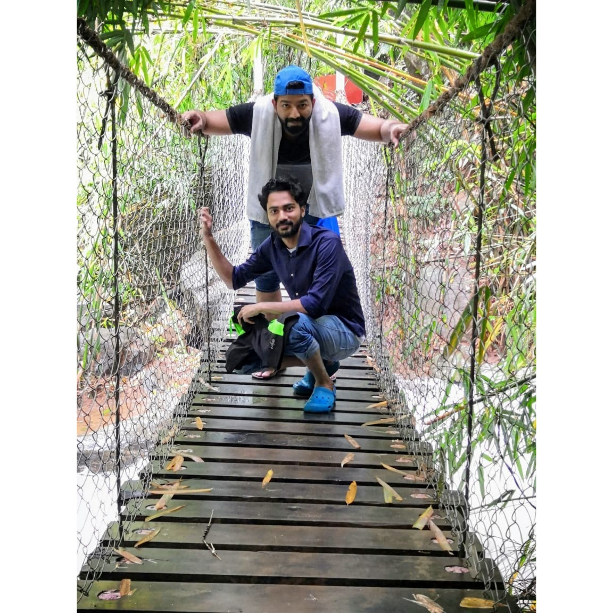
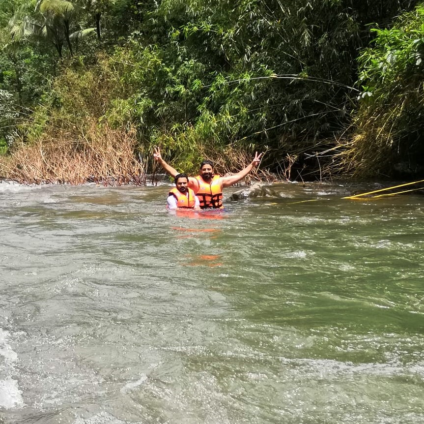

It was back in August 2019. I was in Thalassery for my cousin, Irfan’s wedding. Most of my cousins are settled in the Middle East and we all get together on occasions like this. I was so happy to see all those faces after a very long time. It was a happy week. Irfan wasn’t just a cousin to me, but my best buddy. We grew up together and were classmates until the 10th standard. After 10th, we drifted apart in Academic life. So you know how close we are. And I had a good time attending his wedding and all other related functions.
Kerala Floods
It was the time when Kerala was suffering from the flood but our place, Thalassery was not affected by the grace of God. Sometimes, it was raining heavily. But we managed to successfully conduct the wedding, in spite of the terrible weather. Few days after the wedding, I asked him about going somewhere. We didn’t want to go too far because it wasn’t safe due to the heavy rainfall. After considering different places, we decided to go to 'Palakkayam Thattu', a small hill station at an altitude of 3500 ft above sea level. It was around 70 km from Thalassery. We asked his brother, Ihsan, and one other cousin, Jeyyuka to join the trip. And we decided to go the next morning.
It is said that the sunrise is beautiful when viewed from its peak. So we planned to leave at 5 AM. I went to the bed, but I couldn't sleep. I have a problem, I get too excited the night before the trip and I can barely sleep. And I was also worried that we wouldn’t go as it was still raining heavily in the night. And Irfan, he’s not a morning person, sometimes it is really difficult to wake him up in the early morning. That night, he was staying at his wife’s place. So there was no way for me to wake him up. If he misses the alarm, we miss the trip.
I managed to get some sleep and woke up to my alarm. And as I feared, it was still raining. It was a bad sign. I was sleeping in Ihsan’s room. I tried to wake him up but he got lazy and found the rain as an excuse. He believed that there was no way that we could make it happen in this rain. I was disappointed by the rain but I still wanted to go.
The Glass is half full
I called Irfan and Jeyyuka to check if they were awake. Fortunately, they both were awake and we three decided to take a chance despite the heavy rainfall. I was really happy to see their enthusiasm. Irfan called me and asked me to wait outside as he had started from his place. He picked up Jeyyuka while coming and then picked me up. It was still raining but we stayed positive. I got in and asked our favorite lady, Google, to give directions to 'Palakkayam Thattu'. It was 5:20 AM and it would take another 2 hours to reach 'Palakkayam Thattu'. So we weren’t sure that we could make it before the sunrise. But we were more worried about the rainfall.
We started the journey and I felt happy to travel with my cousins after a long time. Even though it was raining, it felt good to travel in the car. The music of the rain and the viper beats made me feel better. I was jonesing for a black tea, like mallus say, “Ithiri Mohabbat itta oru Sulaimani”. But our priority was to reach there as early as possible. After a while, my stomach started to play “Radio Mango”, yeah, we were starving and decided to stop at the very next tea stall. As we were heading towards 'Palakkayam Thattu', I started to look for a tea stall on both sides of the road. And after traveling for another few kilometers, we found a tea stall. The rain wasn’t pouring there, but drizzling. We entered the tea stall and placed an order for omelet and tea. A cool breeze touched my face and murmured to my ears. The weather was so good. It was a perfect time to have a freshly cooked omelet.
We all had omelet and tea enjoying the perfect weather. It was almost sunrise by the time we finished our breakfast. We then got into the car and continued our journey. It was raining again and the inconsistency started to worry us. If it rains when we’re hiking, we’ll get drenched. So we started looking for a shop to get an umbrella. We found a shop and bought 3 umbrellas. It was drizzling then. We continued the journey and the road got worse as we were getting closer to the place. Then there was a steep uphill road. After climbing that road, we saw a signboard which says “Palakkayam Thattu” on it. And there was a parking space to the right. We parked the car believing that we had reached the place.
An Off-road Ride
To our surprise, we got to know that we hadn't reached the place and it was still 30 minutes away. A local guy told us that it would be really difficult to drive our car through the road carved on the hill. Hence they provided private jeep services. As we have come this far, we thought of enquiring about the Jeep charges. And he told us that it would cost 2000 INR for the two way journey including the waiting time. Apart from 'Palakkayam Thattu', he would also take us to two other places, Ayyanmada Cave and Ezharakund Waterfalls. I have never heard of those places before but still, I was so excited. Luckily, we had brought swim shorts, just in case. And it came in handy!
We got our stuff from the car and shifted to the Jeep. And then we started the off-road ride. The driver was a friendly guy and he started sharing valuable information about that place. He also showed us the area which was washed away in the flood. Then he started to talk about the Ayyanmada Cave which will be our first visit. It is a 200+ meters, naturally evolved cave. It is believed that a Buddhist monk used to meditate in this cave centuries ago. I was so excited to witness that magical cave I never heard about.
A Mysterious Cave
 Rubber plantations near the Ayyanmada CaveWe arrived at the spot and got down from the Jeep. We could see Rubber plantations all over there. I expected a long hike to the cave, but it was right near the road. We climbed down a few steps and walked towards the cave. A beautiful stream paved the way to the Cave. As it has been raining for many hours, the stream was rushing to the cave. The stones were slippery, so we climbed down to the cave carefully. And I started recording video as I was walking towards the cave. And there it was, Ayyanmada Cave. The stream flowing into the cave made it look spectacular. We were all so happy to find this place, which wasn’t part of our plan. That’s what I love about travel. We discover new places and learn new things. The experiences I get from traveling is something invaluable.
It was very dark inside the cave and we weren’t equipped for a cave expedition. With the phone flashlight, we tried to lighten the cave. But It was still dark, the phone flashlight wasn’t enough. We could see that it was a long cave. I wish we had walked till the end of the cave, but it was monsoon season and hence wasn’t safe. We stood inside the cave in the darkness and took a look outside. The stream of water running towards us through the obstacles; it was a beautiful sight. And the water was unpolluted and crystal clear.
After spending around 20 minutes in the Cave, we continued our journey to 'Palakkayam Thattu'. The route to 'Palakkayam Thattu' was beautiful. It was lined by rubber and cocoa tree plantations. Irfan stood up in the back of the jeep to get a 360-degree view of the beautiful nature. As the wind was blowing his face, he inhaled the fresh air. I could say that he was happy. He felt rejuvenated. Although it wasn't safe, he kept standing there and started taking videos.
The Two Eyes (frames) of Kannur
We were almost there and I could see the signboard. The road was like a mountain pass. We could see the valley lined with rubber and cocoa plantations, from there. The driver stopped at the entrance and there was a ticket counter. We purchased tickets and started hiking up the hill. To reach the peak we have to climb a few hundred meters. We could see the first frame a few meters away. Yes, a picture frame, a humongous one, which is the main attraction of this spot. No one leaves 'Palakkayam Thattu' without taking a photo at those frames. It was like a ritual.
They didn’t place the frame randomly. It was there for a reason. Yes, the scenery was breathtaking. And looking at the frame from a distance, it would just look like a picture of beautiful scenery. Through the frame, the boundary of Kannur and beyond were visible. On one side is the Pythal hill and on the other side is the lush green forests of Coorg.
 The frame at the peak.While we were going to 'Palakkayam Thattu', it was completely foggy. But once we started hiking, it started to clear and we could see the beautiful scenery. Nature revealed its beauty to us and the fog cleared like a curtain on the stage. We were so lucky that it wasn’t raining and the fog cleared.
Coming to the main event. Yes, taking photos at the frame. We took a few photos standing in the frame. And we continued the hike to the peak. There was another frame at the peak and I believe that it is the main one. We reached the peak and I must say, it was beautiful. And yes, the frame there was even more beautiful. We took a few photos of different poses.
We missed the sunrise, but I am sure that we would be disappointed if we had reached earlier. It would be foggy or raining for sure. We were happy that everything was going well and we never had any trouble on this trip even though it was monsoon season with heavy rainfall.
I could see ziplines, zorbing, and other adventure activities there. I like ziplines but that one wasn’t looking interesting. It was not that long enough in length and height. We could see that the zipline wasn’t calibrated well. We started to observe the activities and the next person on the zipline didn’t reach the finish line. It stopped before that. As it was not that high, another person started pushing him to the finish line. We started laughing and felt lucky that we didn’t waste money on it.
Adventure activities didn’t grab my attention but nature sure did. It was really beautiful and I could stay there all day just looking at the beautiful nature. We noticed that it was getting foggy and we decided to hike back to our Jeep. When we were almost near the Jeep, it started raining and we sprinted to the Jeep. We got lucky again.
A Paradise with seven natural pools
Our next visit was Ezharakund Waterfalls. So, the rain wasn’t a problem. We continued our journey to the Waterfalls. Looking at the Google Map, I noticed that we’re near the Karnataka border. Coorg district in Karnataka was just 10 minutes away from the Waterfalls. It was another fun ride through the beautiful trails.
After traveling for around 30 minutes, we reached our spot; at least I thought so. The jeep would go until a specific spot and from there we had to walk. But it wasn’t that far either. We left water bottles and other stuff inside the Jeep and carried only the essentials; t-shirt and swim shorts. While we were walking towards the waterfalls, we saw a small house. A woman, in her early 50s, was keeping the laundry to dry. Our driver called out her name and asked whether the Waterfalls was open. She told him to wait outside the gate as the guide was on the way. The waterfall is managed and maintained by the District Tourism Promotion Council (DTPC). We need to purchase tickets and we will be accompanied by a guide all around the waterfalls.
We didn’t have to wait much. We saw him coming as we were standing outside the gate. He came and opened the gate. We got in and he introduced himself to us. That woman we saw earlier was his mother and it was his house. He got this job as he was a resident of that area. He opened his cabin, kept his stuff inside and it was officially open. We bought the tickets and he assigned himself to be our guide. I thought there would be other people working as guides and he is in charge of the ticket counter. But I couldn’t find anyone else. Anyways, we were the only tourists. When I asked him, he told me other people are working there and they are at the exit gate. If other tourists come, they would come up here and accompany them.
When I saw the Waterfalls, I was so happy, I never expected a waterfall like that. The waterfall comprises of seven levels of rocky natural pools of varying sizes and depths and hence the name, Ezharakund (it translates to seven and a half pit, in Malayalam language). As it was monsoon season with heavy rainfall, the waterfalls were at its best. Tons of water kept flowing. We could feel its force. It was quite evident that we would get seriously injured or in the worst case, die, if we go anywhere near the water. Even though the vertical drop wasn’t that high, the water was powerful. I could see a rope tied across the waterfall. Seeing that I was so excited to cross the waterfall using that rope. But we all know the answer, it is a damn “No”. I asked the guide and he told me that he can’t allow anyone to cross the waterfall as it is too dangerous. Hmm, yeah, it was fine. It is dangerous and it was obvious seeing the flow of the water. And there was another drop a few meters away. So if anyone slips, they would flow in the Rapids and fall off the vertical drop. So that plan left my mind.
So the question is, can we use our shorts which we carried all the way? Is there a spot where we can venture into the water? When I asked the guide, he told me that there’s a spot for swimming and it is down the hill. After spending some time watching the waterfalls and taking a few photos, we started hiking downhill along the waterfalls. Even a bigger surprise was, it stretches out to more than a kilometer. We have to hike more than a kilometer to reach the spot where we can swim. I was all excited. I love swimming and if it is in the open waters, fresh waters, it is the best thing I can ask for. With all the excitement, we kept walking.
It was not just the waterfalls, the surrounding areas were also really beautiful. We planned only to visit 'Palakkayam Thattu'. It was meant to be our main spot. But now it has changed to this beautiful waterfall. We were in the right place at the right time.
I googled for this place and got to know that this place was not popular and when I looked into it further, I saw that it was a dry waterfall in all the photos on the Internet. Perhaps the heavy rainfall in this monsoon season turned it into a Paradise. We were just lucky.
Not to mention, the trail was also really beautiful. On our way, there were steps built on a slope, and water kept flowing through it. It was picture-perfect.
Along the way, we saw a hanging bridge to help us cross a Rapid. It was surrounded by bamboo trees which made it look like one in a Fantasy world. It was another opportunity for photos and we didn’t miss that chance. We took a few photos standing on the hanging bridge and then continued to walk.
 The Hanging bridge over the Rapids.The Rapids
While hiking, we stopped at a few spots as we were mesmerized by the beauty of the trail. And after a while, we reached our swimming spot. Our guide had told us that he would provide a lifejacket to be safe. Perhaps I was overconfident that I am a strong swimmer and asked him whether I could venture into the water without wearing the lifejacket, and he agreed. But upon reaching the spot and seeing the Rapid, I doubted my decision of not wearing the lifejacket. To check, I dipped my lower leg by sitting on a rock near the Rapid. The moment I put my leg in the water, it was pulled into the direction of the water flow and then I realized how strong it was. If I had jumped into the water without wearing the lifejacket, I would have pulled into the water and fallen off a vertical drop or gotten hit by a rock. I believe that even our guide wasn’t aware of how strong it was that day. Because the previous day we received a great amount of rainfall. Perhaps the rapid currents got stronger because of it.
I decided to wear a lifejacket and then venture into the water. Irfan and I changed the clothes and wore a lifejacket over the t-shirts. They had tied a rope across the Rapid as a safety measure. We both slowly entered the water by holding onto the rope. Once we were in the water, we felt how strong the current was. It was so strong that we won’t be safe even with the lifejacket. We were moving in the direction of the water flow and the rope helped us from flowing further. Once we were comfortable in the water, we decided to try swimming in the opposite direction of the Rapid. I must say, it was hard, I had to put 5x strokes to get the result of one. Even after swimming at full throttle, I could move only a few meters. I kept swimming but I wasn’t moving any further. And the moment I stopped swimming, I was flowing in the opposite direction, which is the direction of the water. Once I was near the rope, I grabbed the rope and held it.
The Vertical Drop
After accepting defeat, I noticed another rope tied along the rapid on the other side. With full energy, I swam to that rope. I got a hold onto it and started moving towards the vertical drop. As I was moving closer to the drop, the current was getting stronger. I moved slowly as there were numerous obstacles and steps in the streambed. Once I was near the vertical drop, I could feel the force of the water falling there.
I like adventures and this made me happy. I was enjoying it a lot. I could feel the adrenaline rush as I was standing near the vertical drop, with 80% of my body dipped in the water. I wanted to feel it, how it would be like flowing in the Rapid where the water current was so strong. I pushed myself into it and that was it. The water took me like a baby and I was flowing with the Rapid.
For a moment, I thought I might lose control and get hit by a rock. Luckily, I managed to navigate and got hold onto the rope when I was near it. It was a great experience because nowadays the officials don't allow people to venture into the waterfalls where it is dangerous. We were lucky to be there at the right time.
After spending an hour or so, we decided to leave. We both went to the public washroom and changed our clothes. Meanwhile, Jeyyuka ordered tea for us. Having hot tea after the activity was so refreshing. We enjoyed the tea with a beautiful view of the waterfalls.
Monday Blues
Once we were done with the tea, we started walking towards the exit gate where our driver was waiting for us. We got into the Jeep and went back to their camp. From there we shifted to our car and started driving back to Thalassery. I sat back and relaxed while Irfan was driving. After a while, we all were starving and decided to have something. We stopped at a small restaurant and pigged out on Malabari fritter foods. And after having the food, we drove back to Thalassery with all the good memories!